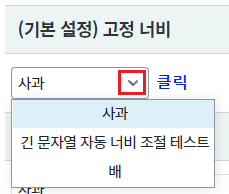
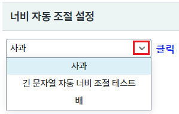
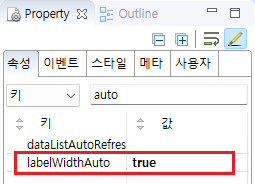
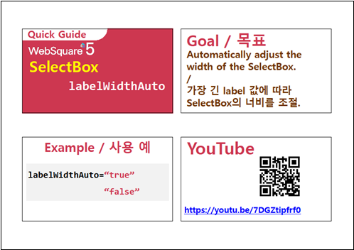

Selectbox의 항목의 가장 긴 문자열에 맞춰 컴포넌트의 너비가 자동 조절되는 설정 예제입니다. 속성 labelWidthAuto 지정을 통해 사용할 수 있습니다.
(기본 설정) 고정 너비
너비 자동 조절 설정
영역 [(기본 설정) 고정 너비]의 Selectbox의 항목을 확장합니다.
컴포넌트의 항목 영역의 너비와 상관없이
컴포넌트의 너비가 지정한 style의 width와 동일하게 표현됩니다.
[브라우저(Chrome) 실행 예시]

영역 [너비 자동 조절 설정]의 Selectbox의 항목을 확장합니다.
컴포넌트의 너비가 지정한 style의 width와 상관없이
컴포넌트의 항목 중 가장 긴 문자열의 너비만큼 표현됩니다.
[브라우저(Chrome) 실행 예시]

속성을 지정합니다.
[필수] labelWidthAuto="true" //항목 중 가장 긴 문자열에 맞게 너비를 지정
그림 1.웹스퀘어5 SP5 스튜디오의 Property View(속성창) 예시

[소스 코드 예시]
<!-- selectbox의 소스 본문 예시 --> <xf:select1 labelWidthAuto="true" id="sbx_exam2"> <!-- 중략 --> </xf:select1>
labelWidthAuto
[웹스퀘어5 SP5 개발 가이드] SelectBox
링크 : https://docs1.inswave.com/sp5_user_guide/8df43d1f59fab704#641326163f434b17
[웹스퀘어5 SP5 개발 가이드] SelectBox 너비 자동 조절
링크 : https://docs1.inswave.com/sp5_user_guide/8df43d1f59fab704#a2bf015a43f84bb7
SelectBox 너비 자동 조절
링크 : https://youtu.be/7DGZtipfrf0
